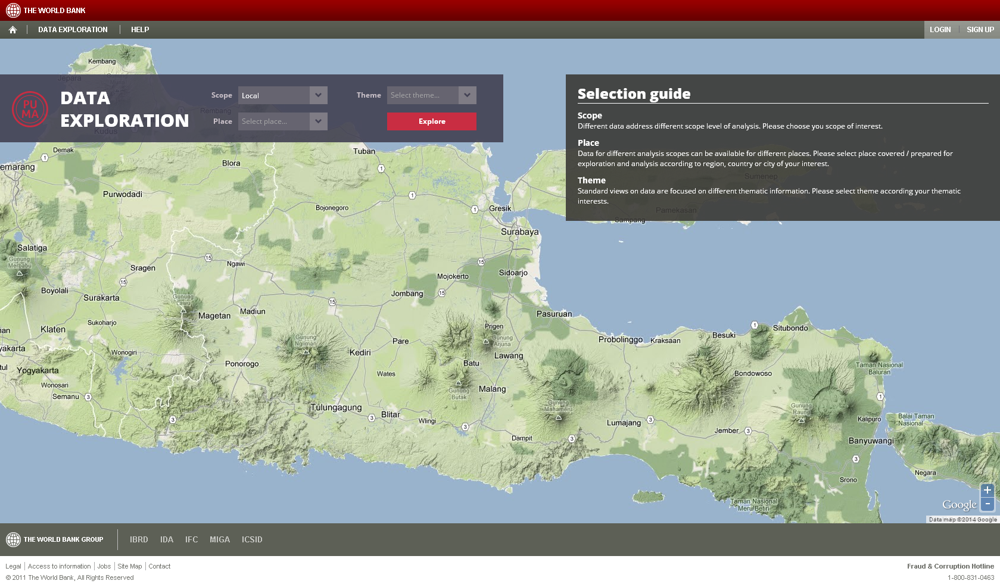

About PUMA data exploration tool
The environment of this geo-based data exploration tool gives you an unique possibility to view, analyze and export values of geo-based information in an user friendly and effective way. Functionalities of the tool have been designed based on long time experiences of Gisat company with presentation of geo-based data in frame of similar projects, including frequent users feedback and its incorporation into the further development, as well as on World Bank requirements specified mainly in the TOR document of the PUMA project.
The PUMA data exploration tool is available on: puma.worldbank.org/tool.

Any information on the data exploration tool could be found in this Help.